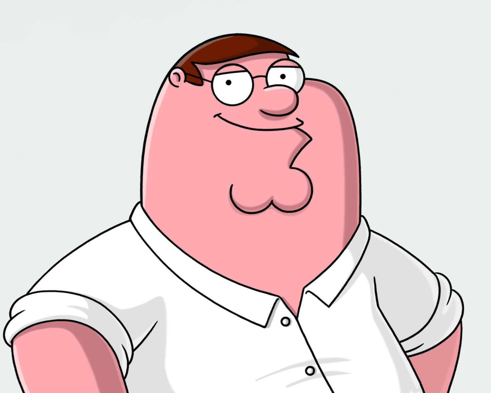
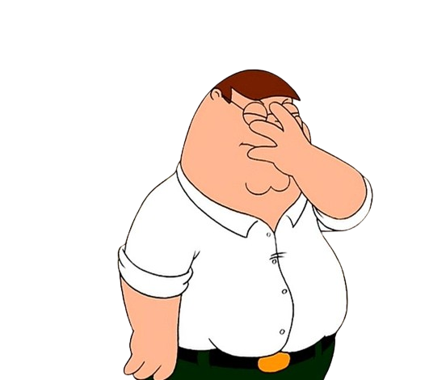
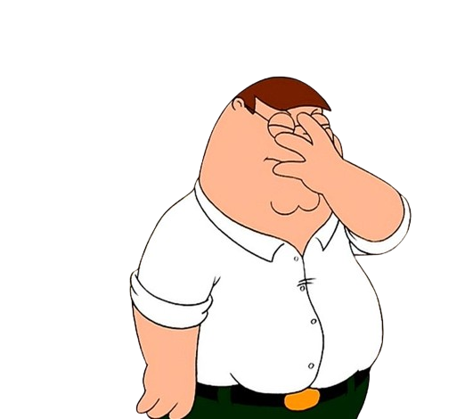
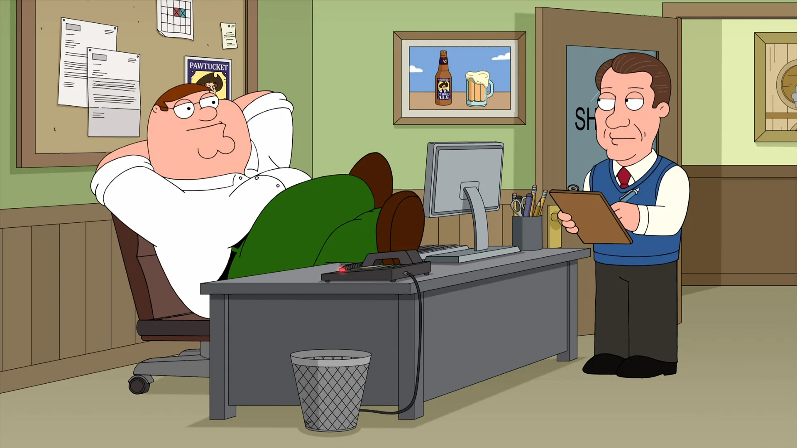

Peter Griffin

Soy Peter Griffin, un hombre de familia con un vasto conocimiento en cosas importantes como ver la tele, beber en el Drunken Clam y meterme en situaciones absurdas. Experto en dormir en el trabajo y tener ideas brillantes (según yo). Busco un empleo que me permita trabajar mínimo esfuerzo y máximo descanso.
- 📞65652728... y creo que 2
- 📩OdioaMeg@callatemeg.com
- 🐭Propiedad del ratón más famoso
 

Experiencia laboral
Inspector de Seguridad
- Pulsé botones aleatorios esperando que hicieran algo.
- Supervisé la producción de juguetes mientras disfrutaba de mis siestas.
- Sobreviví a varios accidentes industriales inexplicables.
En Algún Barco Raro
- Intenté pescar con mi propio sistema "innovador".
- Casi destruyo el barco.
- Aprendí que los peces no me respetan.
Empleado de Pawtucket Brewery
- Pruebo cerveza "por control de calidad".
- Me aseguro de que mis compañeros estén bien relajados durante el horario laboral.
- Hago chistes que solo yo encuentro graciosos.